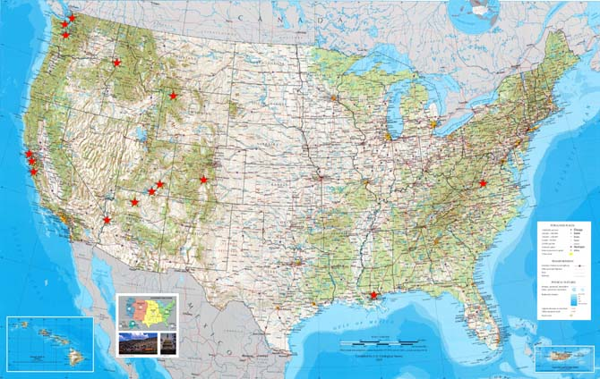

| About Bridges | Western Bridges | Resources | Site Map | Contact Us |

The American West is a rugged region covered with mountains, canyons, rivers, and ravines. Perhaps more than other regions of the American landscape, the West posed problems for settlers as they attempted to traverse its varied terrain.
Applying the best in human imagination and scientific knowledge, engineers have developed a vast network of highways and bridges to enable the easy movement of goods and travelers from coast to coast. This Web project tells about a few bridges of the western United States and the contributions they have made in taming the Wild West.
| About Bridges | Western Bridges | Resources |
|---|---|---|
Nature built the first bridges, such as Rainbow Bridge in Utah’s Natural Bridges National Monument. Man-made bridges began as tree trunks laid in girder fashion. The bridging of barriers is important to the story of human settlement. A 16th-century architect and engineer commented that “bridges should befit the spirit of community by exhibiting commodiousness, firmness and delight.” |
Engineers have modeled their work after three types of bridges — beam, arch, and suspension. These designs include truss, cantilever, cable-stayed, tied-arch, and movable spans. Here you can see examples of bridge types found in the American West. These include highway bridges, trestles, and footbridges. All are a vital part of the landscape that adds beauty and community to an otherwise hostile environment. |
This Web site cannot cover every bridge spanning the canyons and rivers of the western United States. These pages offer an introduction to bridge types, examples from the American West, and additional places to explore. |
| Explore About Bridges | Explore Western Bridges | Explore Resources |